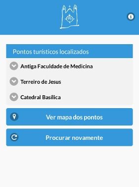

Faça um city tour por Salvador
Quando você estiver dentro de um raio de 100 metros de distância de algum dos principais pontos turísticos da capital baiana, um áudio com conteúdo informativo-cultural sobre aquele ponto estará disponível no aplicativo.
Os lugares mais interessantes da capital baiana
Entre os pontos turísticos disponíveis em nossa visita guiada estão o imponente Farol da Barra, a bela Lagoa do Abaeté, o histórico Terreiro de Jesus, a moderna Arena Fonte Nova e muitos outros.
Acesso offline
Ative o GPS de seu smartphone ou tablet e tenha acesso a todos os recursos do Salvador City Tour Mobile. Não é necessário estar conectado à Internet para ouvir o áudio.

Android
O Salvador City Tour Mobile está disponível gratuitamente para o sistema Android. Instale agora mesmo no seu smartphone ou tablet.

iOS
Acesse agora mesmo a App Store da Apple e instale o Salvador City Tour Mobile no seu iPhone ou iPad.